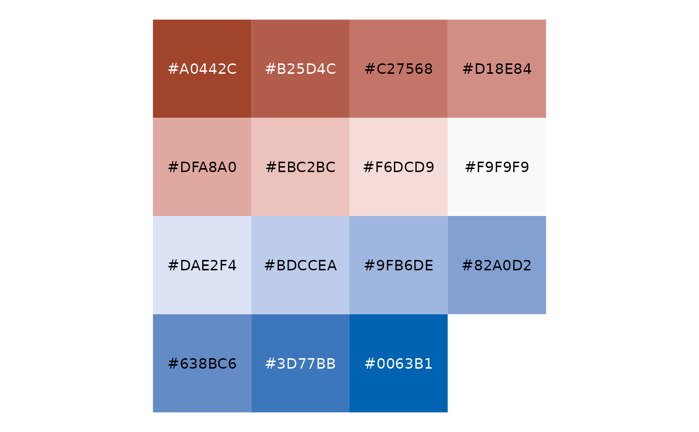
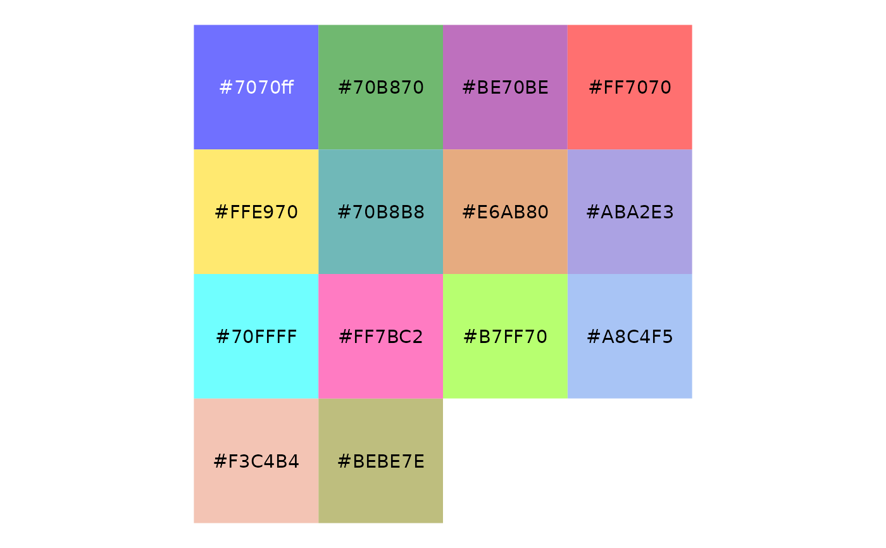
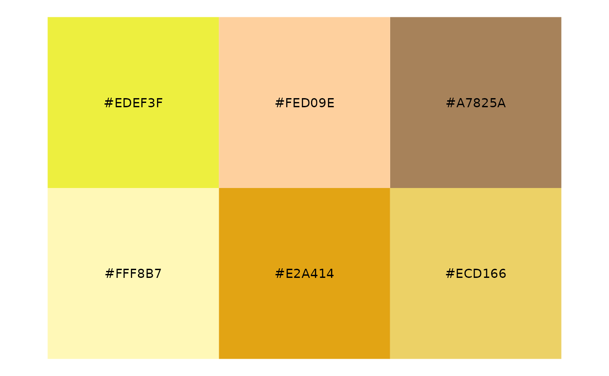
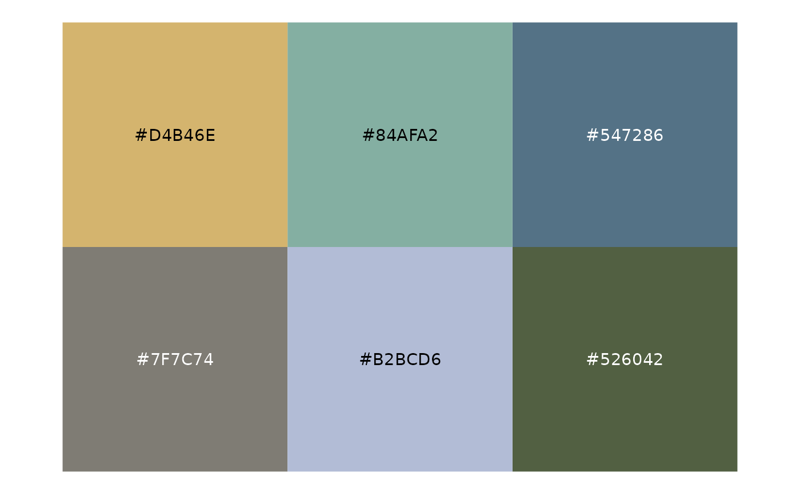
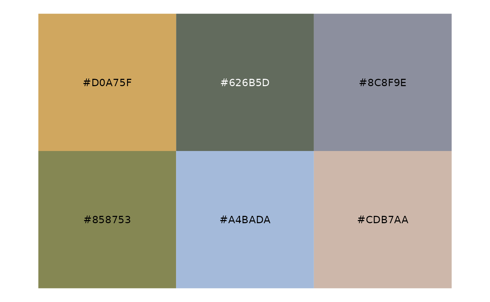
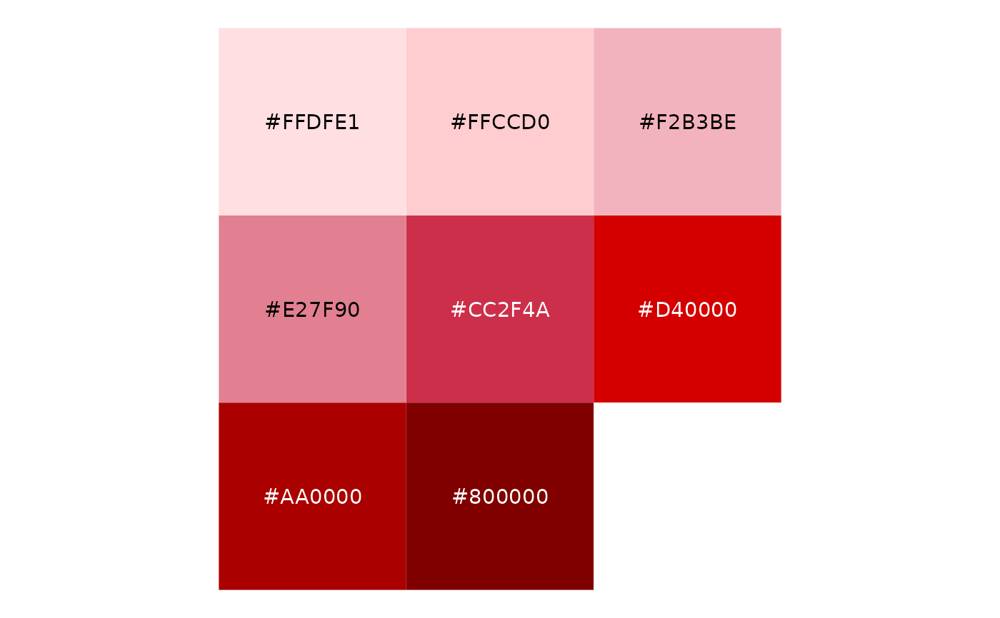
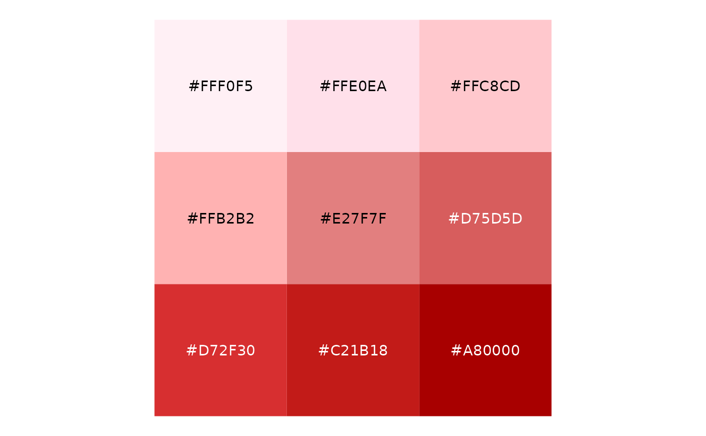

Included palettes:
partisan, a perceptually uniform red-white-blue scale
dra, the Dave's Redistricting App classic color palette
penn82, historic categorical color palette from the 1982 published Pennsylvania congressional district map
randmcnally and natgeo, colors taken from Rand-McNally and National Geographic political maps
coast and larch, inspired by natural scenery
fivethirtyeight, FiveThirtyEight-inspired color palette
wiki_dem_pres: Wikipedia Presidential Democratic palette
wiki_rep_pres: Wikipedia Presidential Republican palette
wiki_dem: Wikipedia downballot Democratic palette
wiki_rep: Wikipedia downballot Republican palette
wiki_proposal: Wikipedia proposal support palette
jacksonville, Jacksonville, FL inspired color palette
florida, Florida inspired color palette
washington, Washington Redistricting Commission inspired color palette
alaska, Alaska inspired color palette
Format
list of character vectors of type palette::palette (which supports a
plot(), print(), and pillar generics for visualization)
Details
For details on Wikipedia-based colors, see https://en.wikipedia.org/wiki/Wikipedia:WikiProject_Elections_and_Referendums/USA_legend_colors.
Examples
plot(ggredist$partisan)

plot(ggredist$dra)

plot(ggredist$penn82)

plot(ggredist$randmcnally)
plot(ggredist$natgeo)
plot(ggredist$coast)

plot(ggredist$larch)

plot(ggredist$fivethirtyeight)
plot(ggredist$wiki_dem_pres)
plot(ggredist$wiki_rep_pres)

plot(ggredist$wiki_dem)
plot(ggredist$wiki_rep)

plot(ggredist$wiki_proposal)
plot(ggredist$jacksonville)
plot(ggredist$florida)
plot(ggredist$washington)
plot(ggredist$alaska)